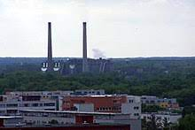
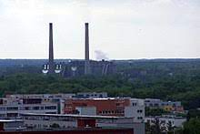

Pardubice (německy Pardubitz) jsou univerzitní a statutární město v okrese Pardubice na východě Čech,
metropole Pardubického kraje s výraznou správní, obytnou, obslužnou a výrobní funkcí pardubicko-hradecké aglomerace.
Leží ve východní části Polabí na soutoku řek Labe a Chrudimky, přibližně 100 kilometrů východně od Prahy a 20 kilometrů jižně od
Hradce Králové v nadmořské výšce přibližně 220 metrů 230 metrů.
Původní ves, doložená v roce 1295, nesla název Pordoby. Místní jméno tedy dříve znělo Pordobice (1318 „de Pordobitz“), tj. „ves lidí Pordobových“. Pordobice se nacházely na území dnešní čtvrti Pardubičky, jihovýchodně od středu města. Dle jedné teorie jméno do Polabí přinesli z Polska mniši řádu cyriaků (podle polského místního jména Porydęb), kteří spravovali zdejší kapli sv. Jiljí. Dle jiné teorie existovalo pojmenování „in Pordabii“ v listině z roku 1295, tedy ještě před příchodem zmíněných mnichů, a naopak polská místní jména jsou odkazem na české Pardubice.
Hláskovou změnu Pordob- na Pardub- lze vysvětlit snahou po disimilaci dvou -o- a možná i mylnou asociací se spojením „pár dubů“, popřípadě osobním jménem Pardus; výklad není zcela jistý. Německá podoba názvu města zní Pardubitz.
c 2 = a 2 + b 2
.jpg)
 

Piškot = ♡